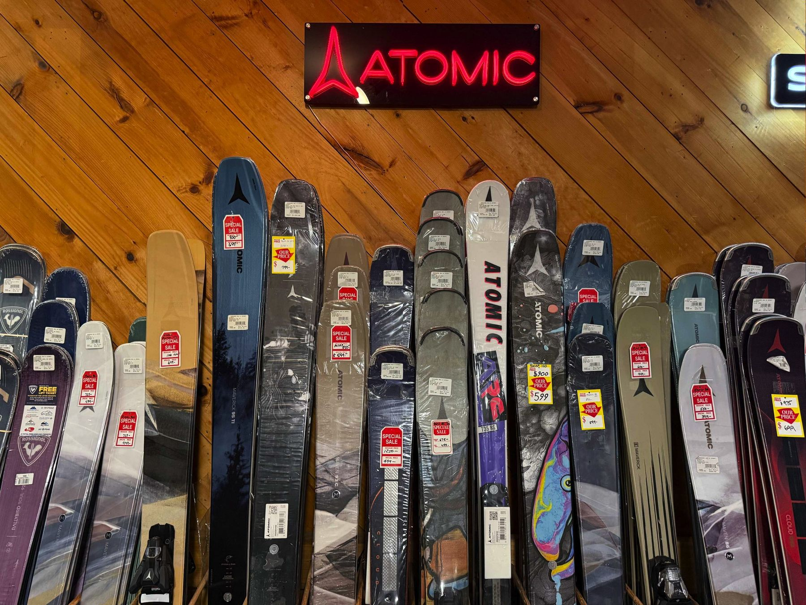
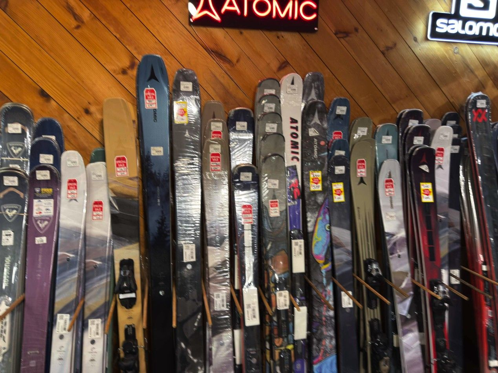
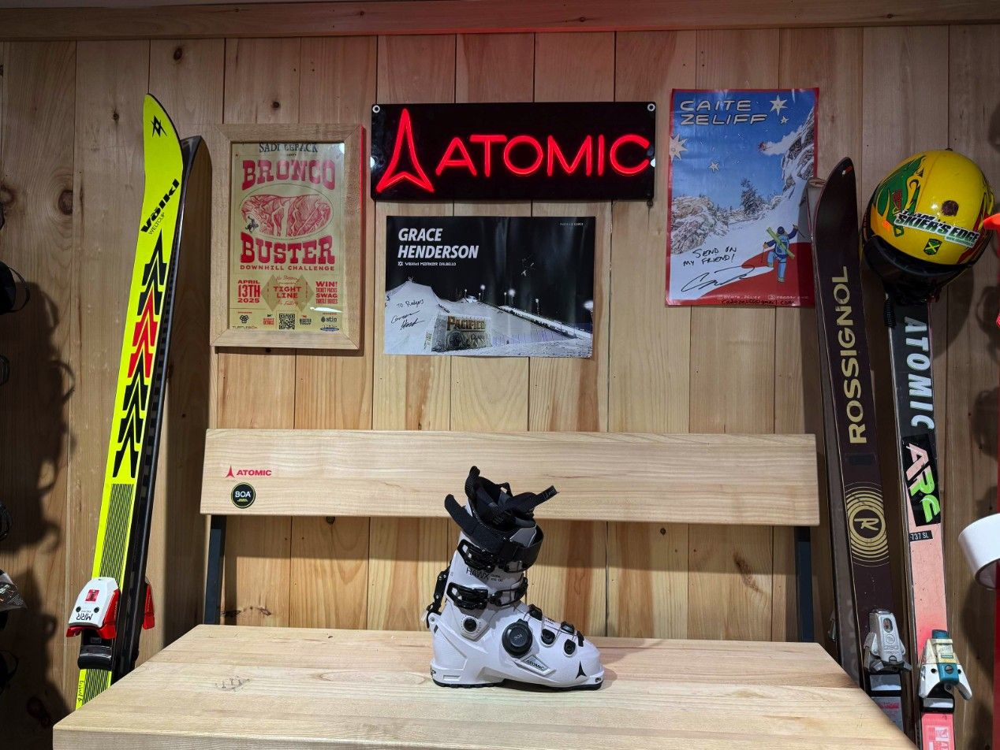
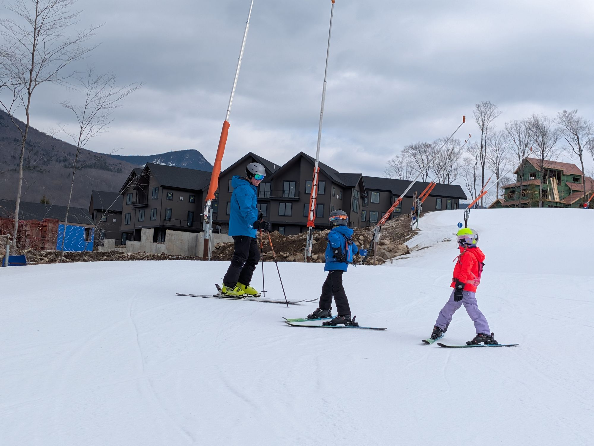
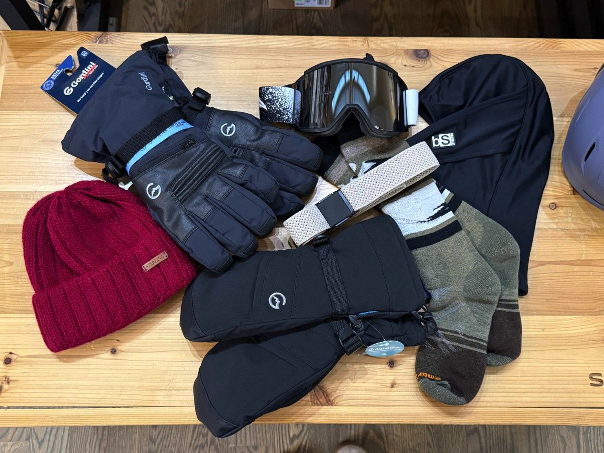
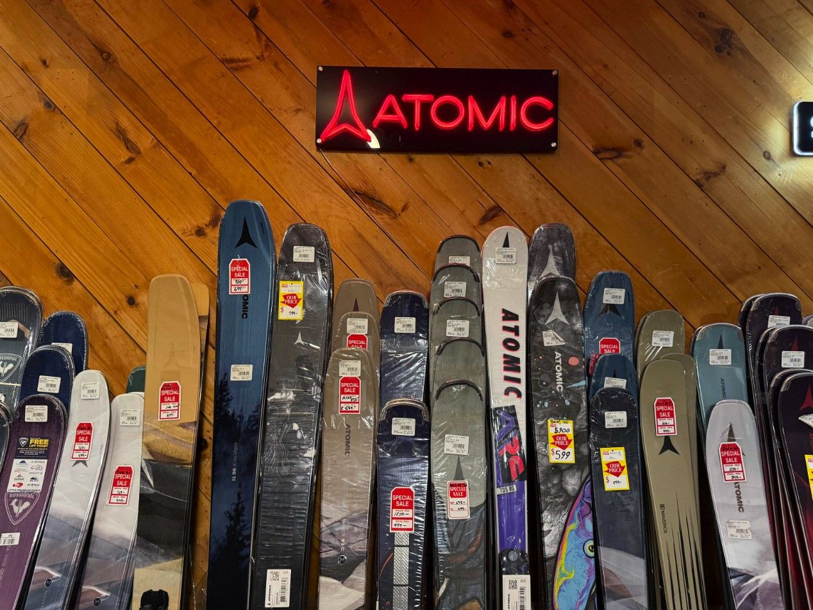
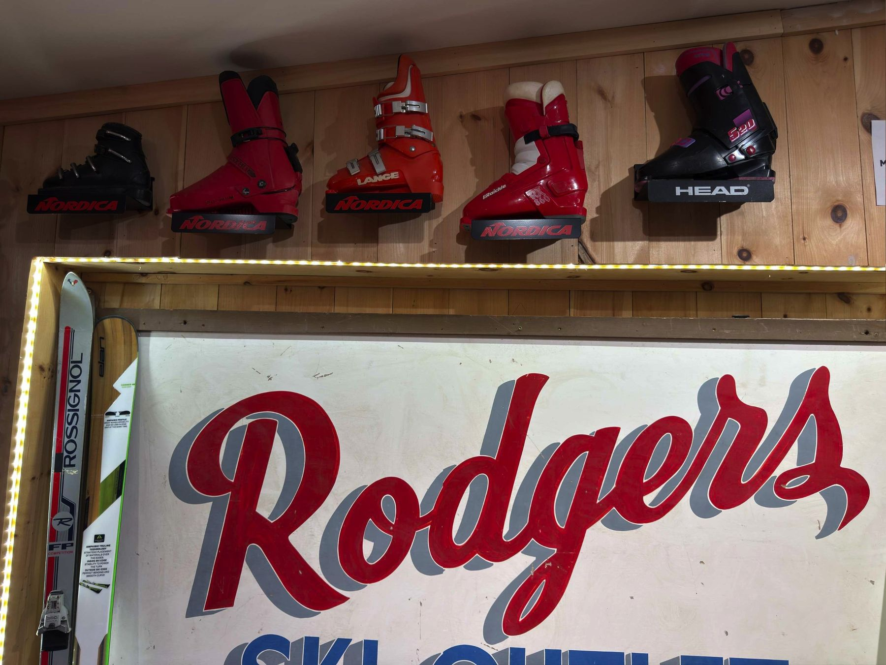
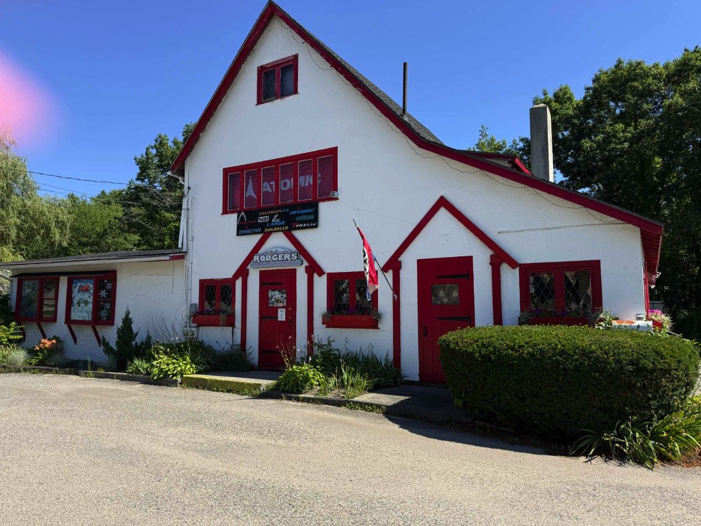

332 US Route 1, off I-95. Southern Maine’s ski and bike shop since 1986: skis, boots, bikes, tuning, boot work and the Junior Seasonal Lease.
The area ski and bike shop
Serving Portland-area skiers, riders and cyclists since 1986. Day-tripping to Sunday River, Sugarloaf or Pleasant Mountain, or driving to the Whites: stop on Route 1 first.
What’s different here: Scarborough sells skis, not snowboards, and does not rent equipment. Families use the Junior Seasonal Lease instead, and the bike shop runs year-round. Rentals and snowboards are at the Lincoln, NH store.

Scarborough ski wallDepartments
Everything in the Scarborough store, each on its own page.

Ski
Skis, boots and bindings for Maine day-trips and weekends in the Whites.
Bikes
Mountain, cruisers, gravel, hybrids, e-bikes and kids’ bikes, with service and builds.

Services & Tuning
Ski and board tunes, stone grinding, race tunes, mounting and boot work.

Junior Seasonal Lease
Skis, bindings and boots for the season, $159, pick-ups from October 1.

Accessories
Helmets, goggles, gloves, heated gear, hats and bags, stocked for Maine winters.

Boot work
Shell and liner heat molding, punches, spot grinds and heel lifts at the Maine store.

Since 1986Group rides and the trails out back
The Scarborough shop hosts social, no-drop group rides on the railroad-track trails off Highland Avenue: flat terrain, all ages and skill levels, the Rodgers van at the entrance so you won’t miss the turn. Ride dates are posted on Instagram and in the journal.
In 2024 SEDCO gave the Scarborough store its Legacy Business Award for serving the town and its neighbors since 1986.
Find the store
332 US-1, Scarborough, ME 04074
Hours · Scarborough, ME
| Monday – Tuesday | 10 – 6 |
| Wednesday | Closed |
| Thursday – Friday | 10 – 6 |
| Saturday | 10 – 5 |
| Sunday | 11 – 5 |
Hours and holiday changes sync from the store’s Google Business Profile.
